制作物
webアプリ『Moment』を制作しました（未デプロイのため、スクリーンショットを使用しています）。
『Moment』紹介
あなたの世界の「瞬間」を切り取って、コレクションを作りましょう！空、日常、好きな色や雰囲気…お気に入りを集めてみませんか？
【PCでの表示】
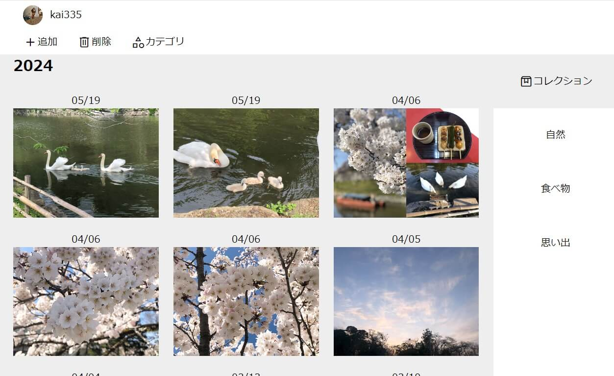
【スマートフォンでの表示】
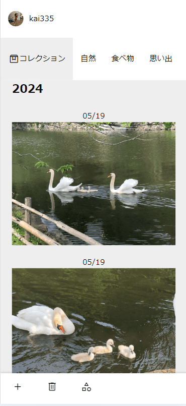
- あなたのコレクションを楽しみましょう。カテゴリに分けて自由に鑑賞
- リアルやSNSで疲れを感じる人に。「自分が生きている目の前の世界」を見つめるきっかけに
- 「自分だけの写真集を作る」という楽しみ方も
開発背景
空白期間を過ごしている時に、写真を眺めたことがメンタルヘルスの改善に役立ちました。そのため「写真鑑賞に集中できる場」を制作しました。
詳細
この空白期間は前向きな気持ちになることが難しく、ふとSNSを見れば、他人との比較、炎上商法、世の中の人々の本音が目に入り、常に自分が価値のない人間だと思えました。しかしある時、ふと写真を見返した時に、これはいい写真だと思うことがありました。辛い状態の自分が気づけないだけで、心がハッとするものや色があることに気づかされました。また、この美しい瞬間に自分は生きていたと思うと、案外悪くないと思えました。写真を撮って見返す行為は、自然と「自分が生きている目の前の世界」の美しさを見つめることとなり、SNSが生み出す生きづらい世の中と距離を置くことに繋がりました。写真鑑賞の効果を体験できるよう、Momentを制作しました。
写真を眺めてメンタルヘルスの改善？
- 写真が持つ色や雰囲気に浸ったり美しいと感じることで、思考することから離れたり感情に変化をもたらす
- 写真を撮って見返す行為は、自然と「自分が生きている目の前の世界」の美しさを見つめることになり、SNSが生み出す生きづらい世の中と距離をおくことに繋げる
そのため、ユーザーには「素敵だと感じるものをじっくり味わってほしい」と考えています。
【こだわり①】 --- 世界観
しかし、今はSNSの時代で、写真映えや承認欲求を意識しがちです。その中でユーザーが自然と写真鑑賞を楽しめるよう、世界観に拘りました。キャッチコピーは『あなたの世界の「瞬間」を切り取って、コレクションを作りましょう！』です。Momentでは、写真を撮ることは「瞬間を切り取ること」。写真の撮り方や撮るものに正解はありません。好きな色や雰囲気など心がハッとした部分を切り取り、自分だけのコレクションとして楽しみます。コレクションを楽しむことは、まさに「素敵だと感じるものをじっくり味わう」行為です。承認欲求ではなく自己満足を追求します。
【こだわり②】 --- カテゴリに分けて自由に管理
「お気に入り」「青色」「春」など、自由にカテゴリが作成できます。カテゴリは画面に固定しており、投稿をスクロール中でも瞬時に切り替えることができます。コレクションの鑑賞を手助けします。
【こだわり③】 --- 投稿は写真のみ
写真集のイメージです。日記や記録など、文章を考えることで頭を使ったり、目にした文章から感情が呼び起こされることがあります。視覚的な情報量を減らし、目の前の世界に没頭してほしいと考えています。
ターゲット層・何を解決する？
どの時代も特有の生きづらさがあります。現代はSNSから大量の情報が目に入り、他人と比較する機会が増え、心が疲れやすい時代だと考えます。心が疲れている人、SNSから離れて過ごしたい人、QOL（生活の質）を高める娯楽を探している人に。「心の活動」の役に立つことが目的です。
機能一覧（ユーザー目線）
メイン機能
追加
①ここで投稿を行います。1度に投稿できる画像は1～4枚です。画像を選ぶとプレビューされます。
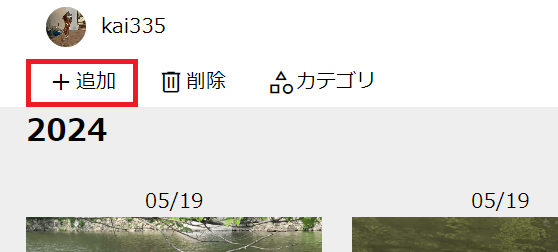
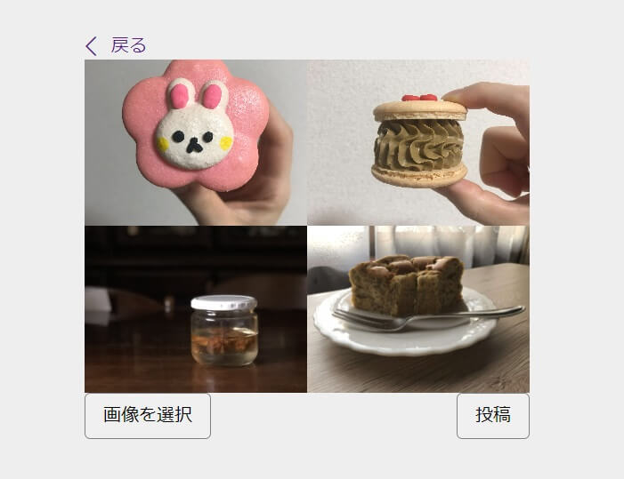
②ドラッグ＆ドロップで好きな順に並び替え、投稿。
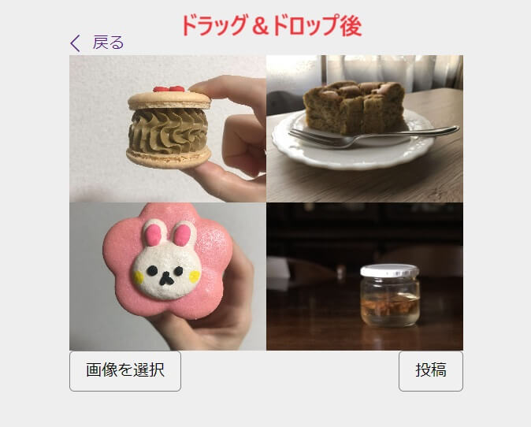
③投稿できました。
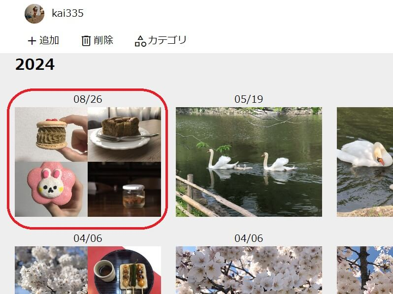
カテゴリ
①ここで投稿をカテゴリに分けます。まずは、カテゴリに追加する投稿を選択します（複数可）。
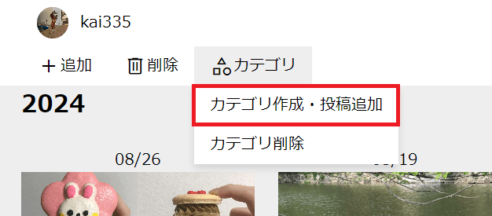
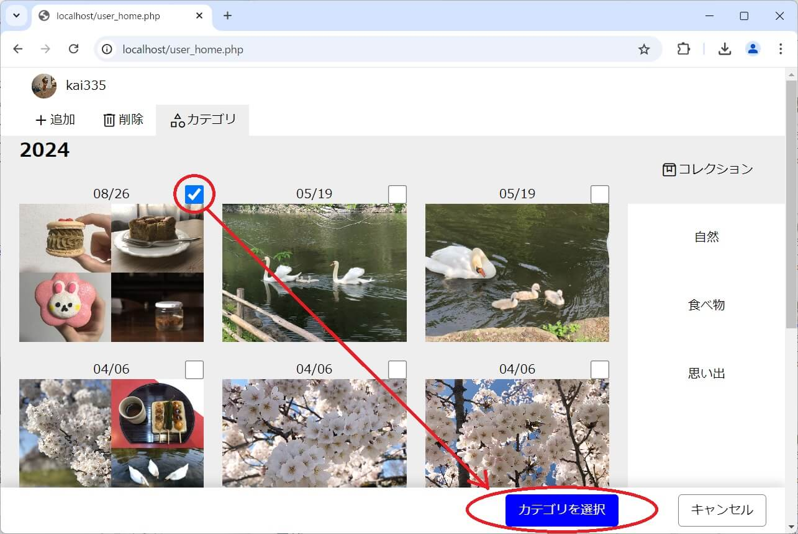
②既存のカテゴリに追加するか、新しいカテゴリを作って追加します。新しく「スイーツ」というカテゴリを作成しました。
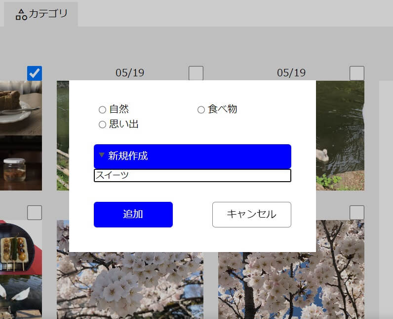
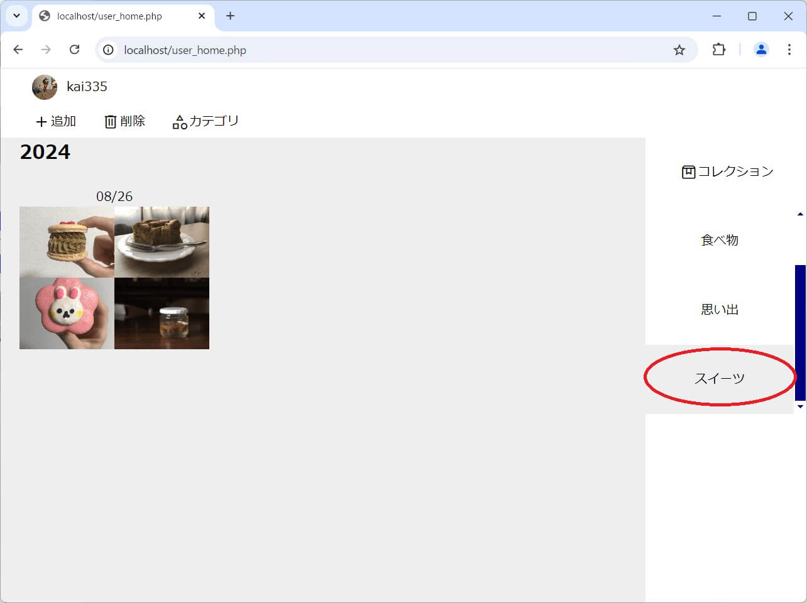
③ここで不要なカテゴリを削除できます。
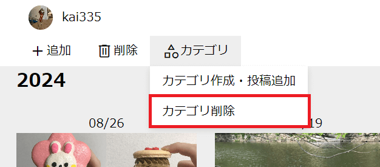
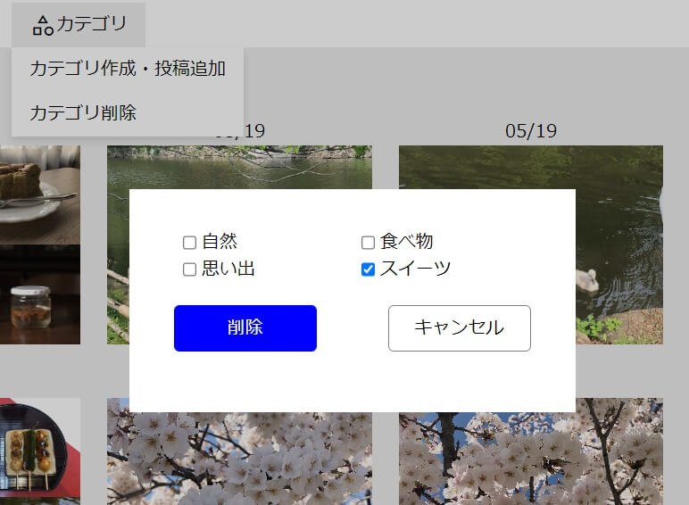
削除
ここで投稿を削除したり、投稿をカテゴリから外すことができます。
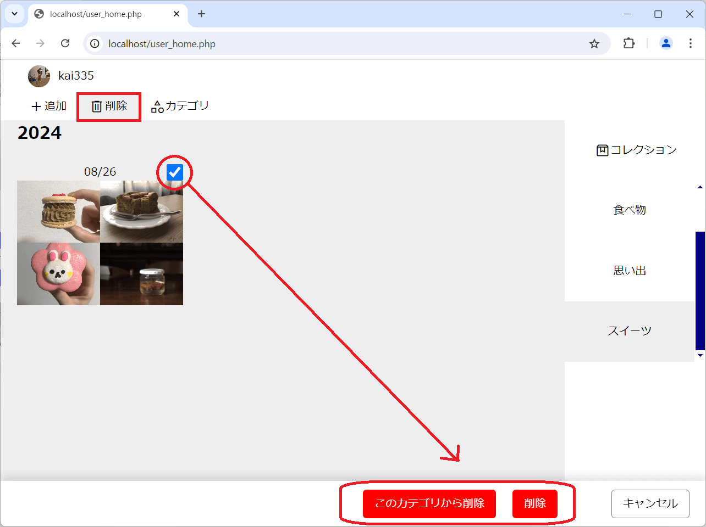
トップページの機能
「ログイン」と「新規登録」ができます。
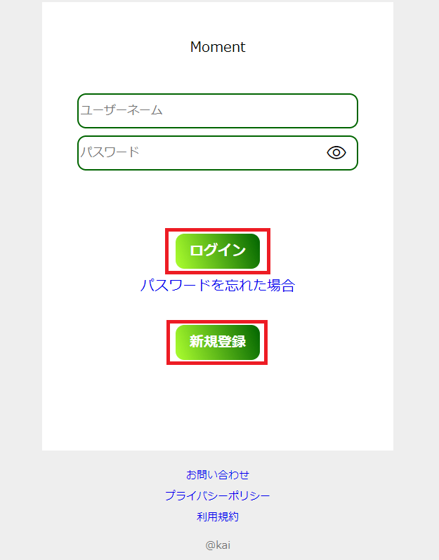
新規登録
①メールアドレス、生年月日、ユーザーネーム、パスワードを入力します。利用規約に同意し、送信します（利用規約を開かなければ、同意できないようになっています）。
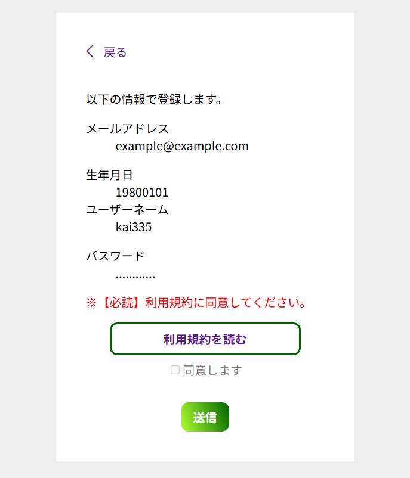
②URL付きのメールが送信されます（1度だけなので、再送したい場合は「再送する」をクリック）。これで仮登録となります。
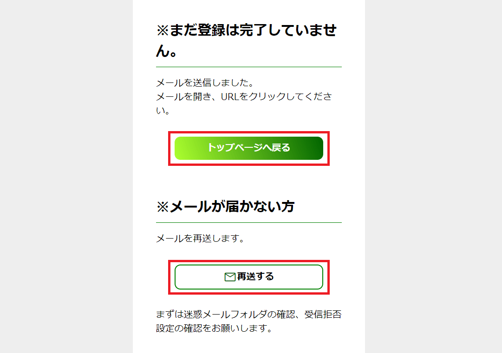
③仮登録中は、トップページのログインと新規登録が利用できません。本登録を済ませます。
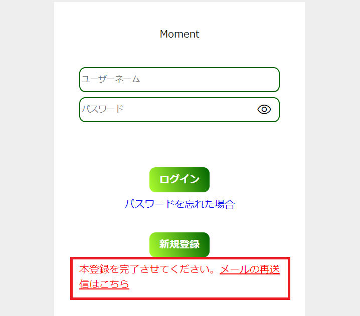
④メール内のURLをクリックすると、本登録かつログインが完了します。URLの有効期限は1時間で、過ぎると新規登録からやり直しになります。URLは、有効期限が過ぎている、改ざんされている、本登録済みである場合無効です。
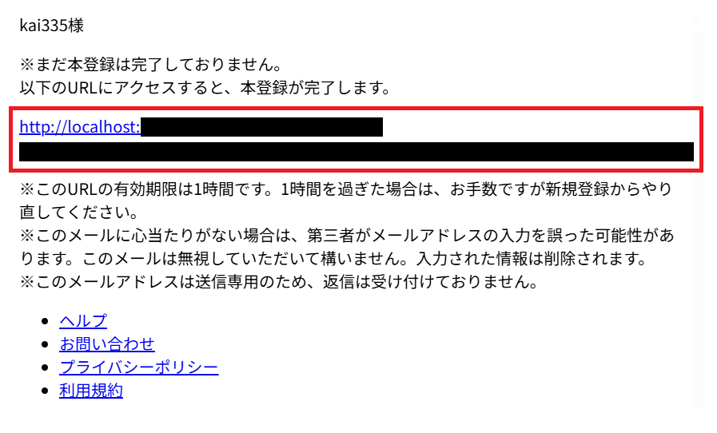
ログイン
- 本登録済みのユーザーのみが利用できます。仮登録中の場合、本登録を促すメッセージと、メール再送信の案内を表示します。
ログアウト / アカウント削除
- ログアウト : クリックするとトップページへ戻ります。
- アカウント削除 : パスワードを入力し、確認画面にて確定します。
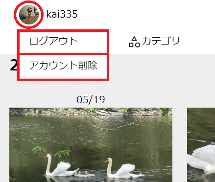
実装詳細（開発者目線）
※下線は工夫した所です。
- 入力値のバリデーション
- 全てPHPで確認。一部、ユーザー体験のためにJavaScriptも使用
メールアドレス 未入力、型（filter_var関数で確認）、一意 生年月日 未入力、型（数8字） - 年 : 今年から100年以内か
- 月 : 1月～12月か
- 日 : 適切な月末か。閏年も考慮
ユーザーネーム 未入力、型（英大・小、数、記号、6字以上）、一意 パスワード 未入力、型（英大・小、数、記号を必ず含む、8字以上） 画像 - 枚数 : 1～4枚
- ファイルサイズ : 1枚1MB以下、0バイト以外
- アップロードに成功したか
- ファイルの種類 : jpg / png / gif（拡張子とMIMEタイプ）
カテゴリ名 未入力、20字以下、一意 - パスワードをBcryptでハッシュ化してDBに格納
-
新規登録
- 入力ページ→最終画面（内容確認＆利用規約に同意）→送信→仮登録。最初の1度だけ、入力内容をDB挿入＆URL付メールを送信。メール再送ボタンを設置
- 入力ページは複数。各ページ、入力欄が少なくユーザーの心理的負担を軽減
- 入力ページを戻ったら、前回の内容を表示（HTMLエスケープをしてXSS対策）
- 利用規約を開かないと「同意する」にチェックできない仕様
- 一意な値の重複登録を防止
- 最終画面の送信時に、各入力ページで行った重複チェックを再び行う。最終画面に留まっている間、別のユーザーが同じ値で登録し、その後自身も送信・登録できてしまうのを防止。DBでもユニーク制約を設定
-
ブラウザバックの対応
- PRGパターンとワンタイムトークンを用いて、二重送信防止とCSRF対策
- 送信値のチェックはPHPで行う。仮登録後、入力ページへ戻りそのまま送信すると、JavaScriptの重複チェックに引っかかり混乱を生むため。仮登録済みでの送信は、トップページへ遷移し、本登録を促すメッセージを表示
- 仮登録中は、トップページのログイン機能と新規登録機能が利用できない
- 予期せぬ順番でファイルにアクセスしたら弾く
- （※1）メール認証のURL
-
ホーム画面（ユーザーの投稿、カテゴリを表示）: JavaScriptの非同期処理
- 画像は、ビューポートが変わっても常にアスペクト比を保つ
- 同じカテゴリを選択した場合、最初の1回だけ実行
- 選択したカテゴリが全投稿を取得するまで、他のカテゴリは選択できない（瞬時に他のカテゴリを選択すると、投稿が前回のカテゴリのままになるため）
- 追加
- 1投稿につき画像は1～4枚。画像をドラッグ＆ドロップして好きな順で投稿できる
- カテゴリ > カテゴリ作成・投稿追加
- 投稿は、既存のカテゴリか、新しいカテゴリを作って追加する
- 投稿とカテゴリは多対多の関係（1つの投稿は複数のカテゴリに属することができ、1つのカテゴリは複数の投稿を持つ）
- 削除
- 投稿を削除する、投稿をカテゴリから外す
-
ログイン
- セッションにユーザーネームとユーザーIDを格納した状態。ユーザーネームは、ユーザー自身が何度も変更できるが、ユーザーIDは登録時に生成される不変な値。DB操作はユーザーIDを使用
-
ログアウト
- セッションを完全削除（セッションを保存したファイル削除、セッションクッキーの削除、メモリから削除）
（※1）このアプリケーションは、以下のMITライセンスの下で提供されるコードを含んでいます。
- 著作権表示 : 大垣 靖男 - ソース : ハッシュ（HMAC）を使って有効期限付きURL/URIを作る方法 - MIT License : https://opensource.org/license/mit
ER図
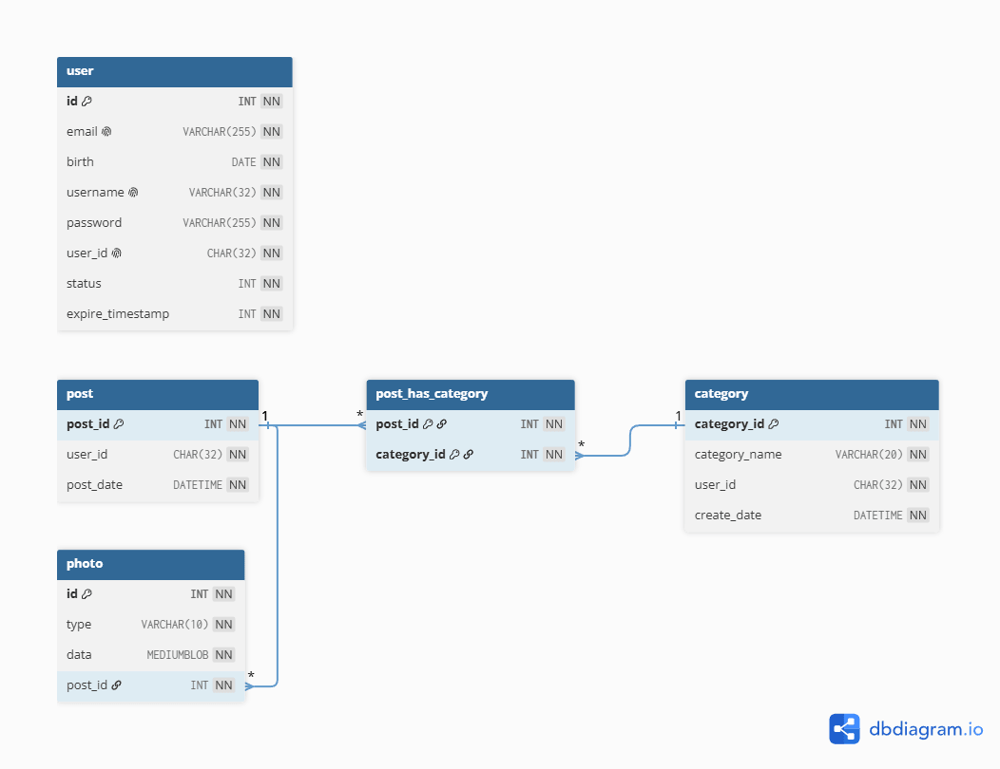
技術スタック
| フロントエンド | HTML / CSS / JavaScript |
|---|---|
| バックエンド | PHP : 8.2.22（Apacheモジュール版） |
| データベース | MySQL : 8.0.36 |
| メールサーバ | MailHog |
| アイコン | Google Fonts |
| バージョン管理システム | Git / GitHub |
| 開発ツール | VSCode : 1.92.2 |
| インフラ | Docker Desktop: 4.23.0 |
| OS | WSL2 : 2.2.4.0 |
| ブラウザ | Chrome |
今後の課題と追加したい機能
- 画像は非公開ディレクトリに保存し、DBにはパスを格納する方法とする（DBの容量減）。現在、DBには画像データそのものを格納し、データURLとして表示している
- 投稿を表示する非同期処理のタイムアウト処理追加
- 現在、一度で全ての投稿を取得している。ユーザーの投稿が増えるにつれ取得にかかる時間も増え、タイムアウトまでの時間が設定できない。画面上では、スクロールするたびに少しずつ投稿を読み込んで表示しているように見え、ブラウザのレンダリング（見た目）と、実装とのギャップを実感。一定の数ずつ投稿を取得する
- 新規登録時のメール認証URLを改善。最新のURLだけを有効にする
- メール再送ボタンを使って複数のメールが来た時、どのURLでも本人確認ができてしまう
- URLの期限内（1時間）に、ユーザーが登録→退会→同じユーザーネームとメールアドレスで再登録した場合。1回目のアカウントの登録時に送信されたURLで、2回目のアカウントの本人確認ができてしまう
- 仮登録ユーザーを自動削除する
- 仮登録のまま1時間以上過ぎたら未登録ユーザーに戻る。新規登録を行う各ファイルでチェックとDB削除をしているが、ユーザーがページにアクセスした時のみ実行される。もし永遠に仮登録状態で放置すると、ユーザー情報がDBに残る
- 投稿画像のメタデータ削除・圧縮処理をする
- 最近のスマートフォンの画像（HEIC形式）への対応
-
画像の並び替えはドラッグ＆ドロップだが、モバイル環境では馴染みがないので改善
- 【案1】画像の枚数に応じて、投稿のレイアウトを表示。配置枠を選択し、好みの位置に1枚ずつアプロード
- 【案2】モバイル版では長押しとスライド
- その他。パスワード再設定、お問い合わせ、プライバシーポリシー、利用規約、設定画面（登録情報の変更、ユーザーネーム変更、アイコン変更）を追加